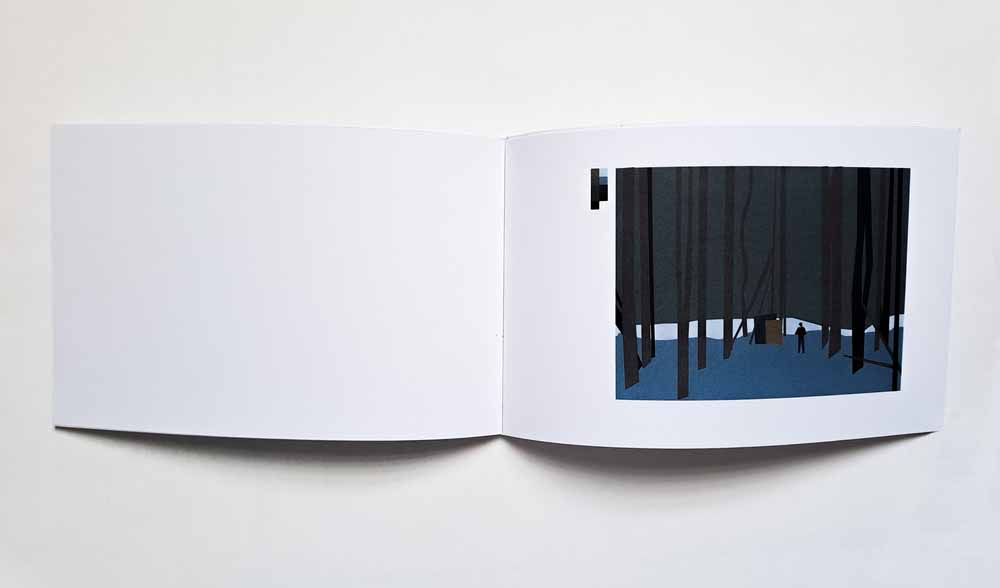
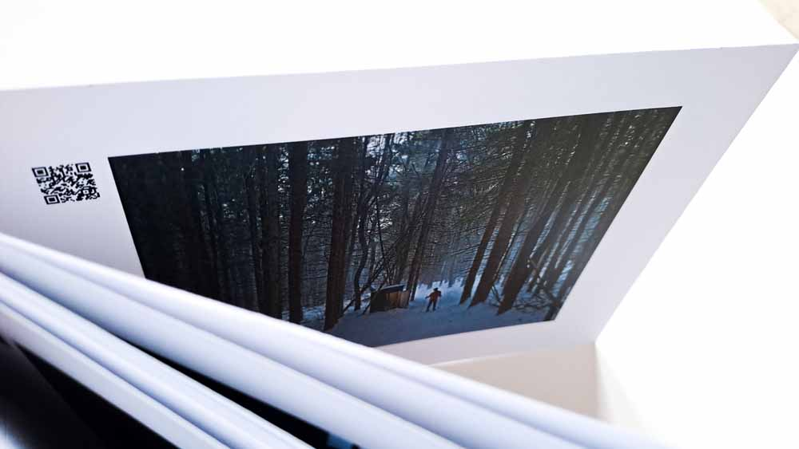
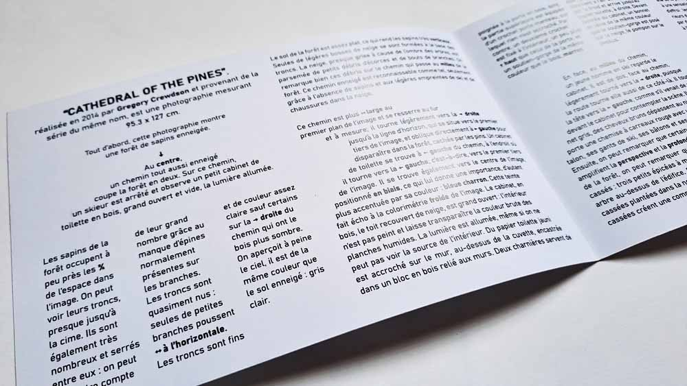
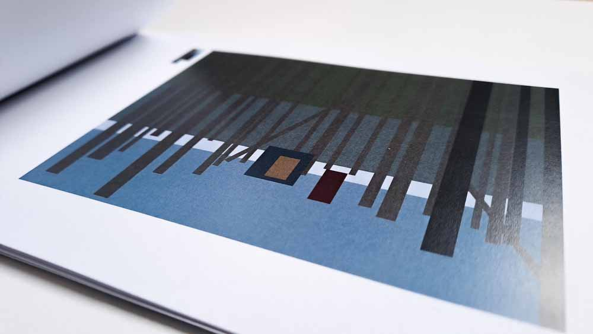

ÉPUISEMENT DE L'IMAGE
Épuisement de l’analyse de la photographie Cathedral of the pines en utilisant image et texte.
Par l’image : Analyse évolutive à la manière d’un flipbook, synthèse totale des formes et de la palette de couleur, se complexifiant au fur et à mesure pour arriver jusqu’à la photographie originale
Par le texte : Analyse didactique en allant du plus large au plus précis. Intention de guider le lecteur à travers la forêt de sapins, jusqu’à faire image avec le texte grâce à la mise en page.



